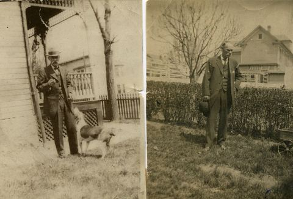
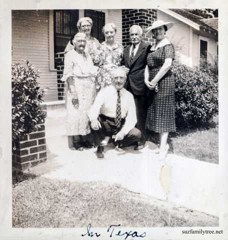

Annie Laurie Linn
1871–1966
Life events
| Born | 21 Jan 1871 · Lonaconing, Maryland Map |
|---|---|
| Baptized | 14 Apr 1871 · Lonaconing, Maryland Map · 1st Presbyterian Church |
| Lived | 1880 · Keyser, West Virginia Map · Marital Status: Single; Relation to Head: Daughter |
| Married | 27 Dec 1897 · George Michael Ford · Mineral County, West Virginia Map |
| Lived | 1900 · Plymouth, West Virginia Map |
| Lived | 1910 · Bluefield, West Virginia Map |
| Lived | 1920 · House #32, Guthrie, West Virginia Map |
| Lived | 1930 · 809 West Virginia Ave, Dunbar, West Virginia Map  |
| Lived | 1 Apr 1940 · 811 West Virginia Ave, Dunbar, West Virginia Map · Age: 69; Marital Status: Married; Relation to Head of House: Wife  |
| Lived | 1950 · 122 Granville Ave, Beckley, West Virginia Map |
| Died | 21 Mar 1966 · Dunbar, West Virginia Map  |
| Probate | 25 Mar 1966 · Raleigh, West Virginia Map |
| Buried | Ford Family section, Athens Cemetery, 507 Cemetery Rd, Princeton, West Virginia Map · The Ford headstone is framed by two overgrown evergreens that obscure the name. Buried there are: Geo M., Annie LL Ford; Harry Hall, Margaret Ford Hall. Linn Ford Saunders, Phil Saunders share a marker. |
Family
Parents

David Morrison Linn1839–1917
Margaret Wilkie Buchanan1841–1878
Annie Laurie Linn1871–1966

George Michael Ford1871–1941
Children
- Margaret Buchanon Ford1899–1995
 Jemima Elizabeth Ford1900–1981
Jemima Elizabeth Ford1900–1981 Annie Laurie Linn Ford1907–1988
Annie Laurie Linn Ford1907–1988 Frederick Wayne Ford1909–1986
Frederick Wayne Ford1909–1986
Photos

Annie Laurie Linn

Annie Laurie Linn
David Morrison Linn

Margaret Buchanon Ford
George Michael Ford
Annie Laurie Linn
Jemima Elizabeth Ford
Margaret Buchanon Ford
George Michael Ford
Annie Laurie Linn
Frederick Wayne Ford
Annie Laurie Linn Ford

Annie Laurie Linn
George Michael Ford
Annie Laurie Linn
Frederick Wayne Ford
Annie Laurie Linn Ford

Annie Laurie Linn

Annie Laurie Linn
George Michael Ford
Annie Laurie Linn
Annie Laurie Linn
Margaret Buchanon Ford
Annie Laurie Linn
Annie Laurie Linn
Annie Laurie Linn